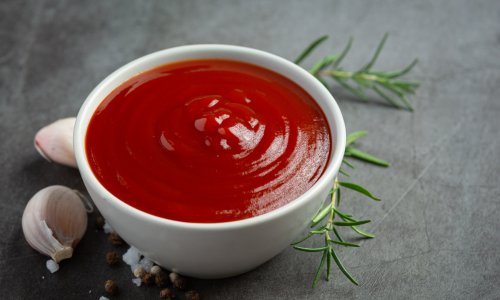

Homemade Ketchup
This easy Homemade Ketchup recipe uses pantry ingredients and is better than
anything you can buy at the store! It is healthier and more delicious too!
Ingredients
- 6 oz can tomato paste*
- 8 oz can tomato sauce
- 2 Tbsp light brown sugar
- 2 Tbsp granulated sugar
- 1/3 cup apple cider vinegar
- 2/3 cup water
- 3/4 tsp salt, or more, to taste
- 1/4 tsp freshly ground black pepper, or more, to taste
- 1/4 tsp garlic powder
- 1/4 tsp onion powder
- dash of ground cinnamon
- optional: dash of crushed red pepper or hot sauce
Directions
- Combine all the ingredients in a medium saucepan over medium heat,
stirring well.
- Bring to a gentle boil, then reduce heat to low and simmer for 20
minutes, stirring often. Remove from heat
- Store in a glass pint jar or other glass container with a lid, in the
fridge for up to two weeks
- Sweeteners and spices can be adjusted, to taste
Notes
Yields about 2 cups (1 pint)
Sugar:You can substitute honey, stevia, splenda, agave, or leave it
out, depending on taste and dietary preferences. Keep in mind that each
will alter the flavor (especially the honey)
Storing Instructions: Store in an airtight container in the fridge for
up to two weeks.
Freezing Instructions: You can freeze it in ice cube trays, then once
frozen, store the cubes in a freezer bag for easy access and quick thawing.